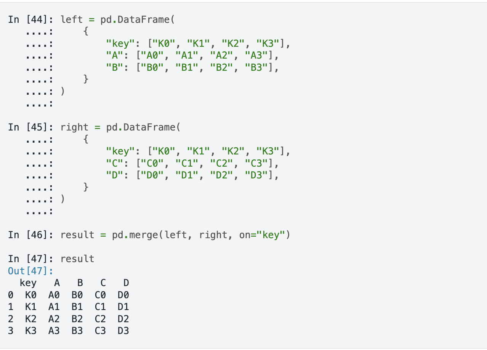
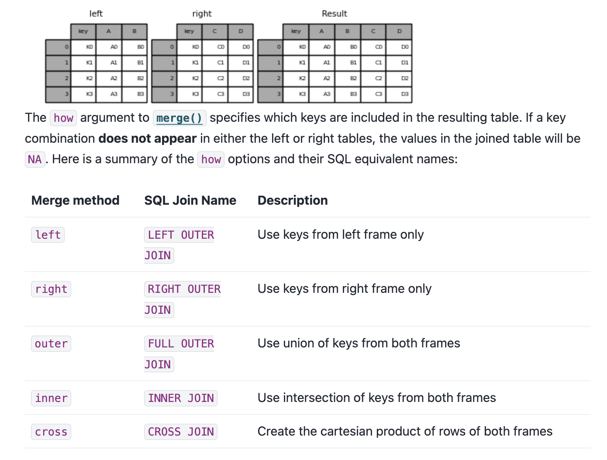

import pandas as pdStructuring Data: Merging, Matching & Augmentation
In the last lesson, we used exploratory data analysis to investigate the shape, categories, missing values, and provenance of an existing dataset. We also saw that changing the unit of observation could change the patterns we found.
In this lesson, we will focus on two related ways of structuring data:
- Merging datasets requires us to decide when records from different sources represent the same cultural object.
- Augmenting data requires us to decide what new structured information can responsibly be inferred from existing fields.
Neither process is automatic. Both depend on choices about representation, comparison, and which relationships or predictions we are willing to treat as evidence.
Merging Cultural Datasets
Data about one cultural object is often distributed across several datasets. One source might describe a book’s library holdings, another its bestseller history, and another its publication history or reception. Merging can bring those sources together, but only after we identify fields that can connect their records.
We will continue working with the Top 500 “Greatest” Novels dataset created by Anna Preus and Aashna Sheth. This dataset begins with OCLC’s list of widely held novels and adds metadata from VIAF, Goodreads, Wikipedia, Project Gutenberg, and other sources.
novels_url = "https://raw.githubusercontent.com/melaniewalsh/responsible-datasets-in-context/refs/heads/main/datasets/top-500-novels/top-500-novels-metadata_2025-01-11.tsv"
novels_df = pd.read_csv(
novels_url,
sep="\t",
encoding="utf-8"
)
novels_df.shape(500, 29)Now that we are understanding how to work with missing data, we can also start to explore how to augment our dataset in various ways. One of the most common ways to do this is through merging datasets together.
First though we need another dataset to merge with our novels_df. We could take a look at sites like Kaggle to find more datasets, or more specific ones like the Post45 Data Collective, which “peer reviews and houses literary and cultural data from 1945 to the present” https://data.post45.org/.

By treating datasets as scholarly publications, the Post45 Data Collective asks us to consider who created a dataset, how it was documented, what it covers, and how it should be cited rather than treating a downloadable file as context-free evidence. While there’s a number of relevant datasets in the Post45 Data Collective, we could use the one about New York Times Hardcover Fiction Bestsellers, 1931–2020, created by Jordan Pruett https://data.post45.org/nyt-fiction-bestsellers-data/. According to the documentation, this dataset contains the following:
The New York Times Hardcover Fiction Bestsellers (1931–2020) contains three related datasets. The first dataset provides a tabular representation of the hardcover fiction bestseller list of The New York Times every week between 1931 and 2020. The second dataset provides title-level data for every unique title that appeared on the hardcover fiction bestseller list during this time period. The third dataset provides HathiTrust Digital Library identifiers for every unique title that appeared on the hardcover fiction bestseller list and that also has a corresponding volume in the HathiTrust Digital Library.
Previous research using similar data has been limited to partial segments of the list, such as the top 200 longest-running bestsellers since a certain date (Piper and Portelance, 2016) or bestsellers from only particular years (Sorenson, 2007). By contrast, this dataset covers the full list since its inception in 1931, along with each reported work’s title, author(s), date of appearance, and rank.
Getting this additional dataset will allow us to explore the relationship between the New York Times bestsellers and the top 500 novels as recorded by OCLC.

It actually constitutes three related datasets:
- weekly appearances on the bestseller list;
- title-level information about unique books;
- HathiTrust identifiers for titles that could be matched to digitized volumes.
The weekly dataset lets us ask which novels in OCLC’s Top 500 also appeared on the New York Times list, how often they appeared, and what their best recorded rank was.
If we click on the Explore/download data for the first dataset, we see a new page that has the remote url for the dataset: https://raw.githubusercontent.com/Post45-Data-Collective/data/refs/heads/main/nyt_hardcover_fiction_bestsellers/nyt_hardcover_fiction_bestsellers-lists.csv.
Notice the raw.githubusercontent.com in the URL. This tells us that this is a raw file from a GitHub repository, which is a common way to share datasets, and we can even see the actual file here https://github.com/Post45-Data-Collective/data/tree/main/nyt_hardcover_fiction_bestsellers.
We can copy that and load it into a new DataFrame.
nyt_url = "https://raw.githubusercontent.com/Post45-Data-Collective/data/refs/heads/main/nyt_hardcover_fiction_bestsellers/nyt_hardcover_fiction_bestsellers-lists.csv"
nyt_bestsellers_df = pd.read_csv(
nyt_url,
encoding="utf-8"
)
nyt_bestsellers_df.shape(60386, 15)Now that we have both datasets loaded, we can start to explore them. Let’s take a look at the columns in the nyt_bestsellers_df.info() DataFrame.
Which gives us the following output:
nyt_bestsellers_df.info()<class 'pandas.DataFrame'>
RangeIndex: 60386 entries, 0 to 60385
Data columns (total 15 columns):
# Column Non-Null Count Dtype
--- ------ -------------- -----
0 Unnamed: 0 60386 non-null int64
1 author 60376 non-null str
2 author_authorized_heading 55717 non-null str
3 author_lccn 55622 non-null str
4 author_viaf 55717 non-null object
5 author_wikidata 54485 non-null str
6 oclc_eholdings 56567 non-null float64
7 oclc_holdings 56567 non-null float64
8 oclc_isbn 33723 non-null str
9 oclc_owi 56567 non-null float64
10 rank 60386 non-null int64
11 title 60386 non-null str
12 title_id 60386 non-null int64
13 week 60386 non-null str
14 year 60386 non-null int64
dtypes: float64(3), int64(4), object(1), str(7)
memory usage: 11.7+ MBWe can see that this dataset has 60386 rows and 14 columns. Notice that one of the columns is Unnamed: 0, which is a default index column created by pandas if we don’t save our csv with the index=False parameter. The remaining columns are author, author_authorized_heading, author_lccn, author_viaf, author_wikidata, oclc_eholdings, oclc_holdings, oclc_isbn, oclc_owi, rank, title, title_id, week, and year. We can also see that the author column has ten missing values, but that other columns like author_authorized_heading, author_lccn, and author_viaf have more missing values. The oclc_isbn column has the most missing values, with 33723 non-null values. That tells us that this dataset is missing a lot of information about the books but missing less information about the authors, which is something we will need to keep in mind as we work with it.
Now we can start to merge the two DataFrames together. We’ve mentioned merging datasets a bit when we discussed joining data in class and SQL, but now we want to dig into details. Often times when we’re working with datasets, we will have our data split into multiple csv files or have differently shaped datasets (i.e. some of them will have more rows or columns than other datasets). Pandas has built in functionality that let’s us merge together DataFrames so that we can perform analysis on the combined dataset, which you can read about in the very extensive documentation here https://pandas.pydata.org/docs/user_guide/merging.html.
While this documentation shows a number of ways to combined datasets (concat let’s you combine datasets by stacking them on top of each other, join let’s you combine datasets by joining them on a common index, and merge let’s you combine datasets by joining them on a common column), we will focus on the merge method.

If we take a look at the documentation, we see the syntax above, which shows us that in Pandas we use the merge() function to combine datasets. The merge() function takes in a number of parameters, but the most important ones are left, right, how, and on. The left and right parameters are the DataFrames we want to merge, the how parameter is the type of join we want to undertake, and the on parameter is the column we want to join the DataFrames on.
We can also see an example of how this works in the figure below.

You’ll notice that we can see a description of the types of how parameters we can use. These are the same types of joins that we discussed in class and in SQL. The how parameter can be set to left, right, outer, or inner. The left join will return all the rows from the left DataFrame and the matching rows from the right DataFrame. The right join will return all the rows from the right DataFrame and the matching rows from the left DataFrame. The outer join will return all the rows from the left DataFrame and the right DataFrame. The inner join will return only the rows that match in both DataFrames.

Now that we are starting to understand this logic, we can consider how we might merge our datasets. First, we can double check the columns in our novels_df and nyt_bestsellers_df DataFrames to see if there are any common columns we can use to merge them.
novels_df.columns, nyt_bestsellers_df.columns(Index(['top_500_rank', 'title', 'author', 'pub_year', 'orig_lang', 'genre',
'author_birth', 'author_death', 'author_gender', 'author_primary_lang',
'author_nationality', 'author_field_of_activity', 'author_occupation',
'oclc_holdings', 'oclc_eholdings', 'oclc_total_editions',
'oclc_holdings_rank', 'oclc_editions_rank', 'gr_avg_rating',
'gr_num_ratings', 'gr_num_reviews', 'gr_avg_rating_rank',
'gr_num_ratings_rank', 'oclc_owi', 'author_viaf', 'gr_url', 'wiki_url',
'pg_eng_url', 'pg_orig_url'],
dtype='str'),
Index(['Unnamed: 0', 'author', 'author_authorized_heading', 'author_lccn',
'author_viaf', 'author_wikidata', 'oclc_eholdings', 'oclc_holdings',
'oclc_isbn', 'oclc_owi', 'rank', 'title', 'title_id', 'week', 'year'],
dtype='str'))We could eyeball the likely similar columns, but we can also use the intersection() method to find the common columns.
set(novels_df.columns).intersection(set(nyt_bestsellers_df.columns)){'author',
'author_viaf',
'oclc_eholdings',
'oclc_holdings',
'oclc_owi',
'title'}intersection() returns the values shared by two sets. A set is an unordered collection that stores each value only once. Here, we convert both lists of column names into sets and ask for the names they share.
Now that we know we have two columns we can use to merge the DataFrames, we can start to do that. Let’s say we want to do a left join, which will return all the rows from the novels_df DataFrame and the matching rows from the nyt_bestsellers_df DataFrame.
merged_df = novels_df.merge(nyt_bestsellers_df, how='left', on=['author',
'author_viaf',
'oclc_eholdings',
'oclc_holdings',
'oclc_owi',
'title'])
merged_df.head()| top_500_rank | title | author | pub_year | orig_lang | genre | author_birth | author_death | author_gender | author_primary_lang | ... | pg_orig_url | Unnamed: 0 | author_authorized_heading | author_lccn | author_wikidata | oclc_isbn | rank | title_id | week | year | |
|---|---|---|---|---|---|---|---|---|---|---|---|---|---|---|---|---|---|---|---|---|---|
| 0 | 1 | Don Quixote | Miguel de Cervantes | 1605 | Spanish | action | 1547 | 1616 | male | spa | ... | https://www.gutenberg.org/cache/epub/2000/pg20... | NaN | NaN | NaN | NaN | NaN | NaN | NaN | NaN | NaN |
| 1 | 2 | Alice's Adventures in Wonderland | Lewis Carroll | 1865 | English | fantasy | 1832 | 1898 | male | eng | ... | NaN | NaN | NaN | NaN | NaN | NaN | NaN | NaN | NaN | NaN |
| 2 | 3 | The Adventures of Huckleberry Finn | Mark Twain | 1884 | English | action | 1835 | 1910 | male | eng | ... | NaN | NaN | NaN | NaN | NaN | NaN | NaN | NaN | NaN | NaN |
| 3 | 4 | The Adventures of Tom Sawyer | Mark Twain | 1876 | English | action | 1835 | 1910 | male | eng | ... | NaN | NaN | NaN | NaN | NaN | NaN | NaN | NaN | NaN | NaN |
| 4 | 5 | Treasure Island | Robert Louis Stevenson | 1883 | English | action | 1850 | 1894 | male | eng | ... | NaN | NaN | NaN | NaN | NaN | NaN | NaN | NaN | NaN | NaN |
5 rows × 38 columns
While this code should work, you’ll notice if you print out the merged_df DataFrame that while there are new columns from the nyt_bestsellers_df in our merged_df there only NaN values in those columns. Why is that?
To figure out where we went wrong, we need to check the values in the author and title columns in both DataFrames, and specifically see if any of them exist in both DataFrames. We can do this by using the isin() and nunique() method to get the unique values in each column.
author_is_shared = novels_df['author'].isin(nyt_bestsellers_df['author'])
title_is_shared = novels_df['title'].isin(nyt_bestsellers_df['title'])
shared_author_rows = novels_df[author_is_shared]
shared_title_rows = novels_df[title_is_shared]
shared_authors = shared_author_rows['author'].nunique()
shared_titles = shared_title_rows['title'].nunique()
print(f"Number of shared authors: {shared_authors}")
print(f"Number of shared titles: {shared_titles}")Number of shared authors: 122
Number of shared titles: 0This output tells us that while there are 122 shared authors, there are no shared titles. This is surprising, so let’s investigate further. There’s a number of ways we could solve this mystery, but let’s first try seeing what the most prolific authors are in both datasets.
shared_author_rows['author'].value_counts().head(5)author
John Grisham 19
John Steinbeck 8
Nicholas Sparks 7
Stephen King 7
J.R.R. Tolkien 5
Name: count, dtype: int64And now let’s do the same for the nyt_bestsellers_df DataFrame.
nyt_author_is_shared = nyt_bestsellers_df['author'].isin(novels_df['author'])
nyt_shared_author_rows = nyt_bestsellers_df[nyt_author_is_shared]
nyt_shared_author_rows['author'].value_counts()author
Stephen King 892
John Grisham 789
David Baldacci 396
Nicholas Sparks 390
Herman Wouk 375
...
Ray Bradbury 2
Christopher Paolini 2
Jean-Paul Sartre 1
Louisa May Alcott 1
Christopher Paul Curtis 1
Name: count, Length: 122, dtype: int64We can see that across both datasets Stephen King and John Grisham are the most prolific authors, but we still don’t know why there are no shared titles. Let’s try filtering for the titles in the novels_df and nyt_bestsellers_df DataFrames.
novel_titles = novels_df[novels_df.author == "Stephen King"].title.unique()
nyt_titles = nyt_bestsellers_df[nyt_bestsellers_df.author == "Stephen King"].title.unique()
print(f"Stephen King's novels: {novel_titles}")
print(f"Stephen King's NYT bestsellers: {nyt_titles}")Stephen King's novels: <ArrowStringArray>
[ 'The Stand', 'It', 'The Shining', 'Misery',
'Carrie', 'The Gunslinger', 'Dreamcatcher']
Length: 7, dtype: str
Stephen King's NYT bestsellers: <ArrowStringArray>
[ 'THE SHINING', 'THE STAND',
'THE DEAD ZONE', 'FIRESTARTER',
'CUJO', 'DIFFERENT SEASONS',
'CHRISTINE', 'PET SEMATARY',
'SKELETON CREW', 'THE BACHMAN BOOKS',
'IT', 'THE EYES OF THE DRAGON',
'MISERY', 'THE TOMMYKNOCKERS',
'THE DARK HALF', 'FOUR PAST MIDNIGHT',
'NEEDFUL THINGS', 'GERALD'S GAME',
'DOLORES CLAIBORNE', 'NIGHTMARES & DREAMSCAPES',
'INSOMNIA', 'ROSE MADDER',
'DESPERATION', 'WIZARD AND GLASS',
'BAG OF BONES', 'THE GIRL WHO LOVED TOM GORDON',
'HEARTS IN ATLANTIS', 'DREAMCATCHER',
'EVERYTHING'S EVENTUAL', 'FROM A BUICK 8',
'THE DARK TOWER: Volumes 1-5', 'SONG OF SUSANNAH',
'THE DARK TOWER', 'CELL',
'ELL', 'LISEY'S STORY',
'LISEY’S STORY', 'DUMA KEY',
'JUST AFTER SUNSET', 'UNDER THE DOME',
'BLOCKADE BILLY', 'FULL DARK, NO STARS',
'11/22/63', 'THE WIND THROUGH THE KEYHOLE',
'DOCTOR SLEEP', 'MR. MERCEDES',
'REVIVAL', 'FINDERS KEEPERS',
'THE BAZAAR OF BAD DREAMS', 'END OF WATCH',
'THE OUTSIDER', 'ELEVATION',
'THE INSTITUTE', 'IF IT BLEEDS']
Length: 54, dtype: strWe can see that King has had many bestsellers and that there is overlap in the titles. However, the titles in the nyt_bestsellers_df DataFrame are all uppercase, while the titles in the novels_df DataFrame are capitalized. This is the reason why there are no shared titles in the two DataFrames — and it’s a perfect segue into talking about Pandas’ built-in string methods.
String Methods in Pandas
Part of what makes Pandas so powerful is that it has a number of built-in methods for working with string data, accessible through the .str accessor. An in-depth discussion of these methods is available in the Pandas documentation https://pandas.pydata.org/docs/user_guide/text.html, but here is a summary of the most useful ones:
| Pandas String Method | Explanation |
|---|---|
df['column'].str.lower() |
lowercase all the values in a column |
df['column'].str.upper() |
uppercase all the values in a column |
df['column'].str.capitalize() |
capitalize the first letter of each value |
df['column'].str.replace('old', 'new') |
replace all instances of one string with another |
df['column'].str.split('delimiter') |
split a column by a delimiter like a comma or space |
df['column'].str.strip() |
remove leading and trailing whitespace |
df['column'].str.len() |
count the number of characters in each value |
df['column'].str.contains('pattern') |
check if a column contains a particular pattern |
df['column'].str.startswith('pattern') |
check if a column starts with a particular pattern |
df['column'].str.endswith('pattern') |
check if a column ends with a particular pattern |
df['column'].str.count('pattern') |
count occurrences of a pattern in each value |
df['column'].str.extract('pattern') |
extract the first regex match in each value |
df['column'].str.findall('pattern') |
find all regex matches in each value |
In our case, we can use str.capitalize() to address the title casing problem in nyt_bestsellers_df. Notice how we first rename the original column so we don’t lose it, then create a new title column for comparison:
nyt_bestsellers_df = nyt_bestsellers_df.rename(columns={'title': 'nyt_title'})
nyt_bestsellers_df['title'] = nyt_bestsellers_df['nyt_title'].str.capitalize()In this code, we first rename the title column in nyt_bestsellers_df to nyt_title so that we don’t lose the original values. Then we create a new title column by capitalizing the values in the nyt_title column using the str.capitalize() method.
If we rerun our shared titles check, we should now see some overlap:
title_is_shared = novels_df['title'].isin(nyt_bestsellers_df['title'])
shared_title_rows = novels_df[title_is_shared]
shared_titles = shared_title_rows['title'].nunique()
print(f"Number of shared titles: {shared_titles}")Number of shared titles: 12However, what happens for titles like Alice's Adventures in Wonderland?
test_title = "Alice's Adventures in Wonderland"
print(f"Is '{test_title}' in novels_df? {test_title in novels_df['title'].values}")
print(f"Is '{test_title}' in nyt_bestsellers_df? {test_title in nyt_bestsellers_df['nyt_title'].values}")Is 'Alice's Adventures in Wonderland' in novels_df? True
Is 'Alice's Adventures in Wonderland' in nyt_bestsellers_df? FalseThe reason that we are not seeing Alice’s Adventures in Wonderland in the nyt_bestsellers_df DataFrame is because the nyt_title is actually stored as Alice'S Adventures In Wonderland. This is a problem because the str.capitalize() method only capitalizes the first letter of the string, but often times in titles we do not capitalize words like in or of or and.
Rather than trying to fix the capitalization, we should preserve the original titles and create separate merge keys for comparison. Lowercasing and stripping whitespace are reasonable here because capitalization and surrounding spaces do not distinguish these books.
novels_df['title_key'] = novels_df['title'].str.lower().str.strip()
novels_df['author_key'] = novels_df['author'].str.lower().str.strip()
nyt_bestsellers_df['title_key'] = (
nyt_bestsellers_df['title'].str.lower().str.strip()
)
nyt_bestsellers_df['author_key'] = (
nyt_bestsellers_df['author'].str.lower().str.strip()
)Notice that we did not overwrite title or author. The original values remain available for display, provenance, and future comparison, while the new key columns record the lowercase, whitespace-trimmed text used for this particular merge.
Now the keys share values:
title_key_is_shared = novels_df['title_key'].isin(
nyt_bestsellers_df['title_key']
)
shared_title_key_rows = novels_df[title_key_is_shared]
shared_title_keys = shared_title_key_rows['title_key'].nunique()
print("Shared titles after creating comparison keys:", shared_title_keys)Shared titles after creating comparison keys: 140To be clear, this approach might enable more comparisons but it is also an interpretative choice. We are assuming that capitalization and whitespace do not distinguish different books, but that may not always be true. For example, The Great Gatsby and The Great gatsby might be different editions or translations. Similarly, author names might be spelled differently in different languages or scripts. In this case, we are willing to make that assumption because we are trying to find matches across two datasets that were created by different organizations with different conventions.
How Does a Merge Work?
Now we can experiment with merging the two datasets. The how parameter in the merge() function determines which rows are preserved in the merged DataFrame.
First, let’s create a variable to store our shared columns:
shared_columns = list(
set(novels_df.columns).intersection(set(nyt_bestsellers_df.columns))
)
shared_columns['title',
'author_key',
'title_key',
'oclc_owi',
'author',
'author_viaf',
'oclc_eholdings',
'oclc_holdings']The intersection() method returns a set containing the values shared by both sets of column names. We then use list() to convert that set into a list that we can modify with list methods.
Notice that we still have our original author and title columns in the shared columns, but we also have our new author_key and title_key columns. If we merge with the author and title columns, we will not find any matches, so we next need to remove those from our shared columns. The list method .remove() removes the first matching value from the existing list.
shared_columns.remove('author')
shared_columns.remove('title')
shared_columns['author_key',
'title_key',
'oclc_owi',
'author_viaf',
'oclc_eholdings',
'oclc_holdings']Now we can experiment with different types of merges. The indicator=True parameter adds a new column to the merged DataFrame that indicates whether each row came from the left DataFrame, the right DataFrame, or both.
inner_merge_df = novels_df.merge(
nyt_bestsellers_df,
how='inner',
on=shared_columns,
indicator=True
)
outer_merge_df = novels_df.merge(
nyt_bestsellers_df,
how='outer',
on=shared_columns,
indicator=True
)
right_merge_df = novels_df.merge(
nyt_bestsellers_df,
how='right',
on=shared_columns,
indicator=True
)
left_merge_df = novels_df.merge(
nyt_bestsellers_df,
how='left',
on=shared_columns,
indicator=True
)
print("Inner merge shape:", inner_merge_df.shape)
print("Outer merge shape:", outer_merge_df.shape)
print("Right merge shape:", right_merge_df.shape)
print("Left merge shape:", left_merge_df.shape)Inner merge shape: (3491, 44)
Outer merge shape: (60769, 44)
Right merge shape: (60386, 44)
Left merge shape: (3874, 44)Notice that for all four merges then number of columns stays the same, but the number of rows changes.
Because we used the indicator parameter, we can also see how many rows came from each DataFrame:
print("Inner merge value counts:")
print(inner_merge_df['_merge'].value_counts())
print("****")
print("Outer merge value counts:")
print(outer_merge_df['_merge'].value_counts())
print("****")
print("Right merge value counts:")
print(right_merge_df['_merge'].value_counts())
print("****")
print("Left merge value counts:")
print(left_merge_df['_merge'].value_counts())Inner merge value counts:
_merge
both 3491
left_only 0
right_only 0
Name: count, dtype: int64
****
Outer merge value counts:
_merge
right_only 56895
both 3491
left_only 383
Name: count, dtype: int64
****
Right merge value counts:
_merge
right_only 56895
both 3491
left_only 0
Name: count, dtype: int64
****
Left merge value counts:
_merge
both 3491
left_only 383
right_only 0
Name: count, dtype: int64The inner merge has the fewest rows because it only keeps rows that match in both DataFrames, which is why we see zero values for left_only and right_only. The outer merge has the most rows because it keeps all rows from both DataFrames, whether they match or not, which is why we see values for left_only, both, and right_only. The right merge has more rows than the left merge because it keeps all rows from the NYT bestsellers DataFrame and only matching rows from the left DataFrame, which is why we see values for right_only and both but not left_only. The left merge has more rows than the inner merge because it keeps all rows from the novels DataFrame and only matching rows from the right DataFrame, which is why we see values for left_only and both but not right_only.
Deciding which merge to use depends on the research question. If we want to know which novels in OCLC’s Top 500 also appeared on the New York Times list, we should use a left merge. If we want to know which novels in the New York Times list also appeared in OCLC’s Top 500, we should use a right merge. If we want to know which novels appeared in both datasets, we should use an inner merge. If we want to know which novels appeared in either dataset, we should use an outer merge.
For our exploration, we want to know which novels in OCLC’s Top 500 also appeared on the New York Times list, so we will use a left merge:
merged_df = novels_df.merge(
nyt_bestsellers_df,
how='left',
on=shared_columns,
suffixes=('_oclc', '_nyt')
)
merged_df.head()| top_500_rank | title_oclc | author_oclc | pub_year | orig_lang | genre | author_birth | author_death | author_gender | author_primary_lang | ... | author_authorized_heading | author_lccn | author_wikidata | oclc_isbn | rank | nyt_title | title_id | week | year | title_nyt | |
|---|---|---|---|---|---|---|---|---|---|---|---|---|---|---|---|---|---|---|---|---|---|
| 0 | 1 | Don Quixote | Miguel de Cervantes | 1605 | Spanish | action | 1547 | 1616 | male | spa | ... | NaN | NaN | NaN | NaN | NaN | NaN | NaN | NaN | NaN | NaN |
| 1 | 2 | Alice's Adventures in Wonderland | Lewis Carroll | 1865 | English | fantasy | 1832 | 1898 | male | eng | ... | NaN | NaN | NaN | NaN | NaN | NaN | NaN | NaN | NaN | NaN |
| 2 | 3 | The Adventures of Huckleberry Finn | Mark Twain | 1884 | English | action | 1835 | 1910 | male | eng | ... | NaN | NaN | NaN | NaN | NaN | NaN | NaN | NaN | NaN | NaN |
| 3 | 4 | The Adventures of Tom Sawyer | Mark Twain | 1876 | English | action | 1835 | 1910 | male | eng | ... | NaN | NaN | NaN | NaN | NaN | NaN | NaN | NaN | NaN | NaN |
| 4 | 5 | Treasure Island | Robert Louis Stevenson | 1883 | English | action | 1850 | 1894 | male | eng | ... | NaN | NaN | NaN | NaN | NaN | NaN | NaN | NaN | NaN | NaN |
5 rows × 43 columns
The suffixes argument preserves columns such as title and author from both sources by renaming them title_oclc, title_nyt, author_oclc, and author_nyt.
Now notice that in the first few rows we are still seeing NaN values in the NYT columns. This is because not all novels in OCLC’s Top 500 appeared on the New York Times list, which is why we see NaN values in the rank, week, and year columns. For instance, the top OCLC novel, Don Quixote, was published in 1605 and could not have appeared on the New York Times list, which began in 1931. However, we do see that some novels, such as The Great Gatsby, have values in the NYT columns, indicating that they did appear on the list. So our next step is to filter our merged DataFrame to only include rows where the title_nyt column is not NaN, which will give us a DataFrame of novels that appeared on the New York Times list.
nyt_novels_df = merged_df[merged_df['title_nyt'].notna()]
print("Rows in NYT novels dataset:", len(nyt_novels_df))
nyt_novels_df.head()Rows in NYT novels dataset: 3491| top_500_rank | title_oclc | author_oclc | pub_year | orig_lang | genre | author_birth | author_death | author_gender | author_primary_lang | ... | author_authorized_heading | author_lccn | author_wikidata | oclc_isbn | rank | nyt_title | title_id | week | year | title_nyt | |
|---|---|---|---|---|---|---|---|---|---|---|---|---|---|---|---|---|---|---|---|---|---|
| 26 | 27 | Brave New World | Aldous Huxley | 1932 | English | na | 1894 | 1963 | male | eng | ... | Huxley, Aldous, 1894-1963 | n80057246 | Q81447 | NaN | 3.0 | BRAVE NEW WORLD | 821.0 | 1932-03-07 | 1932.0 | Brave new world |
| 27 | 27 | Brave New World | Aldous Huxley | 1932 | English | na | 1894 | 1963 | male | eng | ... | Huxley, Aldous, 1894-1963 | n80057246 | Q81447 | NaN | 3.0 | BRAVE NEW WORLD | 821.0 | 1932-04-25 | 1932.0 | Brave new world |
| 33 | 33 | Animal Farm | George Orwell | 1945 | English | political | 1903 | 1950 | male | eng | ... | Orwell, George, 1903-1950 | n79058639 | Q3335 | 0965052745 | 7.0 | ANIMAL FARM | 470.0 | 1946-09-29 | 1946.0 | Animal farm |
| 34 | 33 | Animal Farm | George Orwell | 1945 | English | political | 1903 | 1950 | male | eng | ... | Orwell, George, 1903-1950 | n79058639 | Q3335 | 0965052745 | 10.0 | ANIMAL FARM | 470.0 | 1946-10-06 | 1946.0 | Animal farm |
| 35 | 33 | Animal Farm | George Orwell | 1945 | English | political | 1903 | 1950 | male | eng | ... | Orwell, George, 1903-1950 | n79058639 | Q3335 | 0965052745 | 9.0 | ANIMAL FARM | 470.0 | 1946-10-13 | 1946.0 | Animal farm |
5 rows × 43 columns
We could also do a quick check to see how many novels do not appear on the New York Times list by filtering for rows where the title_nyt column is NaN:
non_nyt_novels_df = merged_df[merged_df['title_nyt'].isna()]
print("Rows in non-NYT novels dataset:", len(non_nyt_novels_df))
print("Non-NYT novels:", non_nyt_novels_df['title_oclc'].nunique())
print("Non-NYT authors:", non_nyt_novels_df['author_oclc'].nunique())
print("NYT & OCLC novels:", nyt_novels_df['title_oclc'].nunique())
print("NYT & OCLC authors:", nyt_novels_df['author_oclc'].nunique())Rows in non-NYT novels dataset: 383
Non-NYT novels: 383
Non-NYT authors: 222
NYT & OCLC novels: 117
NYT & OCLC authors: 75We can see that the majority of novels in OCLC’s Top 500 did not appear on the New York Times list, with only 117 novels and 75 authors appearing on both lists. This is not surprising, as the New York Times list is a relatively recent phenomenon and many of the novels in OCLC’s Top 500 were published long before the list began.
Before working with this merged and filtered DataFrame, we might visualize how this exclusion is affecting our dataset. For example, we could create a histogram of the publication decades of the novels in OCLC’s Top 500 and color the bars by whether or not the novel appeared on the New York Times list using what we learned from Altair.
import altair as alt
# Create a new column in the merged DataFrame to indicate whether or not the novel appeared on the NYT list
merged_df['has_title_nyt'] = merged_df['title_nyt'].notna().map({True: 'Yes', False: 'No'})
merged_df['oclc_pub_date'] = merged_df.pub_year.astype(str) + '-01-01'
merged_df['oclc_pub_date'] = pd.to_datetime(merged_df['oclc_pub_date'], format='%Y-%m-%d')
# Count each OCLC novel once, even if it matched many weekly NYT rows
alt.Chart(merged_df).mark_bar().encode(
x=alt.X(
'oclc_pub_date:T',
title='Publication Decade'
),
y=alt.Y(
'distinct(top_500_rank):Q',
title='Unique OCLC Novels'
),
color=alt.Color('has_title_nyt:N', legend=alt.Legend(title="NYT Appearance"))
)In this code, we are first importing Altair and then doing a similar process to what we did in the last lesson by creating a new column in the merged DataFrame to indicate whether or not the novel appeared on the NYT list. We then create a new column for the publication date of the novel by converting the pub_year column to a string and adding -01-01 to create a date format that can be used in Altair. We then convert this new column to a datetime format using pd.to_datetime(). Finally, we create a bar chart using Altair that shows the number of unique OCLC novels published in each decade, colored by whether or not they appeared on the NYT list. We can see that the majority of novels in OCLC’s Top 500 were published before the New York Times list began, which is why most of them did not appear on the list.
We can also explore the distribution of NYT bestseller appearances over time, and how that distribution changes when we distinguish titles that also appear in OCLC’s Top 500. Each row in the NYT dataset represents one title appearing on the list during one week, so here we use count() to preserve those repeated weekly appearances. A novel that remained on the list for many weeks will therefore contribute more records than a novel that appeared only once.
alt.data_transformers.disable_max_rows()
right_merge_df['in_oclc_top_500'] = right_merge_df['_merge'].map({
'both': 'Yes',
'right_only': 'No'
})
right_merge_df['week'] = pd.to_datetime(right_merge_df['week'], format='%Y-%m-%d', errors='coerce')
alt.Chart(right_merge_df).mark_bar().encode(
x=alt.X(
'week:T',
title='NYT Bestseller Year'
),
y=alt.Y(
'count():Q',
title='Weekly Bestseller Appearances'
),
color=alt.Color(
'in_oclc_top_500:N',
legend=alt.Legend(title='In OCLC Top 500')
)
)